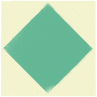

Origami Animals
These are some origami animals. You have the tutorial and instructions to complete each animal!

Camel
- Camel's ears are furry
- Camel can move easily across the sand because of its specially designed feet
- When they find water, they will drink as much as possible because there is not much water in the desert.

Chameleons
- Chameleons are reptiles that are part of the iguana suborder
- Changing skin color is an important part of communication among chameleons
- Most chameleons have a prehensile tail that they use to wrap around tree branches

Pigeons
- Pigeons are incredibly complex and intelligent animals
- Pigeons are renowned for their outstanding navigational abilities
- Pigeons have excellent hearing abilities.

Teddy Bear
- Teddy Bears are great for little kids.
- Winnie the Pooh was based on a real bear

Panda
- Giant pandas are good at climbing trees and can also swim
- Pandas are an amazing type of bear.
- Pandas are endangered.

Frog
- Frogs tounges are like 3 times as long as humans.
- There is a frog in Indonesia that has no lungs – it breathes entirely through its skin.

Cicada
- cicada's come up from the ground around every 20 years or so.
- cicada species switches from being on a 13-year cycle to a 17-year cycle

Dogs
- Dogs noses are wet to help absorb scent chemicals
- Dogs are great company
- Dogs can guide blind people.